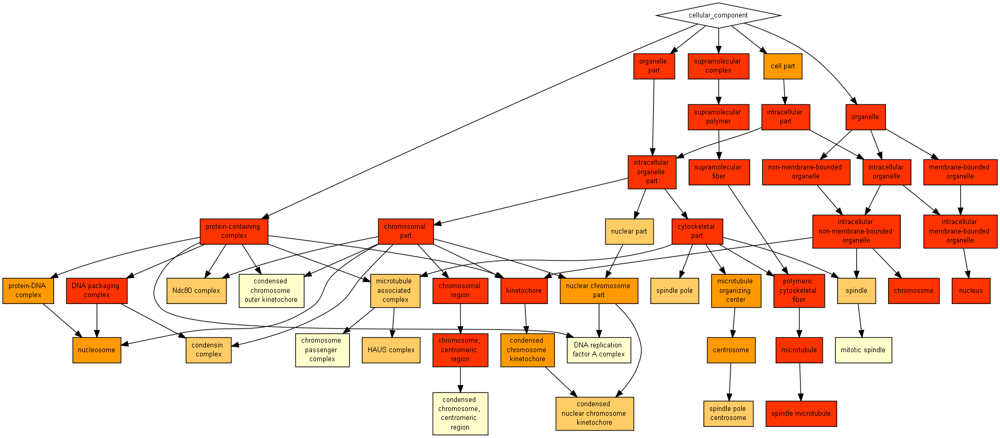

| > 10-3 | 10-3 to 10-5 | 10-5 to 10-7 | 10-7 to 10-9 | < 10-9 |

| GO term | Description | P-value | FDR q-value | Enrichment (N, B, n, b) | Genes |
| GO:0044427 | chromosomal part | 6.36E-35 | 8.65E-32 | 14.45 (17542,419,113,39) |
[+] Show genes
ttk - ttk protein kinase
zgc:171223 - zgc:171223 rpa2 - replication protein a2 zgc:113984 - zgc:113984 cenpf - centromere protein f, (mitosin) pola1 - polymerase (dna directed), alpha 1 zgc:153405 - zgc:153405 mad2l1 - mad2 mitotic arrest deficient-like 1 (yeast) nuf2 - nuf2, ndc80 kinetochore complex component, homolog ndc80 - ndc80 homolog, kinetochore complex component (s. cerevisiae) ncapg2 - non-smc condensin ii complex, subunit g2 pole - polymerase (dna directed), epsilon whsc1 - wolf-hirschhorn syndrome candidate 1 si:ch211-225g23.1 - si:ch211-225g23.1 hist1h4l - histone 1, h4, like zgc:158297 - zgc:158297 bub3 - bub3 budding uninhibited by benzimidazoles 3 homolog (yeast) ncapg - non-smc condensin i complex, subunit g cenpp - centromere protein p pane1 - proliferation associated nuclear element LOC100333275 - histone h1-like ncapd3 - non-smc condensin ii complex, subunit d3 chtf8 - ctf8, chromosome transmission fidelity factor 8 homolog (s. cerevisiae) ncapd2 - non-smc condensin i complex, subunit d2 zgc:194989 - zgc:194989 ska1 - spindle and kinetochore associated complex subunit 1 casc5 - cancer susceptibility candidate 5 zgc:163061 - zgc:163061 ncaph2 - non-smc condensin ii complex, subunit h2 rfc5 - replication factor c (activator 1) 5 si:ch211-113a14.24 - si:ch211-113a14.24 si:ch211-113a14.18 - si:ch211-113a14.18 rad1 - rad1 homolog (s. pombe) bub1ba - budding uninhibited by benzimidazoles 1 homolog beta a zgc:171416 - zgc:171416 cenpk - centromere protein k nap1l1 - nucleosome assembly protein 1, like 1 spc24 - spc24, ndc80 kinetochore complex component, homolog (s. cerevisiae) morf4l1 - mortality factor 4 like 1 |
| GO:0005694 | chromosome | 4.89E-27 | 3.32E-24 | 20.38 (17542,198,113,26) |
[+] Show genes
zgc:171223 - zgc:171223
zgc:113984 - zgc:113984 zgc:153405 - zgc:153405 nuf2 - nuf2, ndc80 kinetochore complex component, homolog ndc80 - ndc80 homolog, kinetochore complex component (s. cerevisiae) whsc1 - wolf-hirschhorn syndrome candidate 1 si:ch211-225g23.1 - si:ch211-225g23.1 zgc:158297 - zgc:158297 hist1h4l - histone 1, h4, like tmpoa - thymopoietin a ncapg - non-smc condensin i complex, subunit g pane1 - proliferation associated nuclear element cenpp - centromere protein p LOC100333275 - histone h1-like aurkb - aurora kinase b ncapd2 - non-smc condensin i complex, subunit d2 ska1 - spindle and kinetochore associated complex subunit 1 zgc:194989 - zgc:194989 smc2 - structural maintenance of chromosomes 2 zgc:163061 - zgc:163061 trip13 - thyroid hormone receptor interactor 13 si:ch211-113a14.24 - si:ch211-113a14.24 si:ch211-113a14.18 - si:ch211-113a14.18 cdca5 - cell division cycle associated 5 cenpk - centromere protein k spc24 - spc24, ndc80 kinetochore complex component, homolog (s. cerevisiae) |
| GO:0005634 | nucleus | 6.19E-23 | 2.81E-20 | 3.00 (17542,3778,113,73) |
[+] Show genes
ttk - ttk protein kinase
rpa2 - replication protein a2 zgc:113984 - zgc:113984 kpna2 - karyopherin alpha 2 (rag cohort 1, importin alpha 1) birc5a - baculoviral iap repeat-containing 5a cenpf - centromere protein f, (mitosin) dnmt1 - dna (cytosine-5-)-methyltransferase 1 adnp2b - adnp homeobox 2b pola1 - polymerase (dna directed), alpha 1 ube2t - ubiquitin-conjugating enzyme e2t (putative) nuf2 - nuf2, ndc80 kinetochore complex component, homolog ndc80 - ndc80 homolog, kinetochore complex component (s. cerevisiae) plk4 - polo-like kinase 4 (drosophila) pole - polymerase (dna directed), epsilon hist1h4l - histone 1, h4, like ticrr - topbp1-interacting, checkpoint, and replication regulator dlgap5 - discs, large (drosophila) homolog-associated protein 5 cenpp - centromere protein p asf1bb - asf1 anti-silencing function 1 homolog bb asf1ba - asf1 anti-silencing function 1 homolog ba (s. cerevisiae) g2e3 - g2/m-phase specific e3 ubiquitin ligase melk - maternal embryonic leucine zipper kinase ncapd2 - non-smc condensin i complex, subunit d2 baz1a - bromodomain adjacent to zinc finger domain, 1a si:dkeyp-26a9.2 - si:dkeyp-26a9.2 ncaph2 - non-smc condensin ii complex, subunit h2 top2a - topoisomerase (dna) ii alpha rfc5 - replication factor c (activator 1) 5 si:ch211-113a14.24 - si:ch211-113a14.24 si:ch211-113a14.18 - si:ch211-113a14.18 kifc1 - kinesin family member c1 cenpk - centromere protein k zgc:171416 - zgc:171416 unga - uracil-dna glycosylase a chek1 - chk1 checkpoint homolog (s. pombe) hmgb2b - high-mobility group box 2b spc24 - spc24, ndc80 kinetochore complex component, homolog (s. cerevisiae) plk1 - polo-like kinase 1 (drosophila) aspm - asp (abnormal spindle)-like, microcephaly associated (drosophila) zgc:171223 - zgc:171223 zgc:153405 - zgc:153405 cdc45 - cdc45 cell division cycle 45 homolog (s. cerevisiae) ncapg2 - non-smc condensin ii complex, subunit g2 cdk1 - cyclin-dependent kinase 1 whsc1 - wolf-hirschhorn syndrome candidate 1 si:ch211-225g23.1 - si:ch211-225g23.1 zgc:158297 - zgc:158297 nusap1 - nucleolar and spindle associated protein 1 ccnf - cyclin f tmpoa - thymopoietin a pane1 - proliferation associated nuclear element ube2c - ubiquitin-conjugating enzyme e2c acrc - acidic repeat containing LOC100333275 - histone h1-like ncapd3 - non-smc condensin ii complex, subunit d3 nupl1 - nucleoporin like 1 aurkb - aurora kinase b tdp1 - tyrosyl-dna phosphodiesterase 1 zgc:194989 - zgc:194989 smc2 - structural maintenance of chromosomes 2 casc5 - cancer susceptibility candidate 5 mus81 - mus81 endonuclease homolog (yeast) zgc:163061 - zgc:163061 rbb4l - retinoblastoma binding protein 4, like eed - embryonic ectoderm development kif11 - kinesin family member 11 anp32a - acidic (leucine-rich) nuclear phosphoprotein 32 family, member a trip13 - thyroid hormone receptor interactor 13 cdca5 - cell division cycle associated 5 rad1 - rad1 homolog (s. pombe) si:dkeyp-35b8.5 - si:dkeyp-35b8.5 nap1l1 - nucleosome assembly protein 1, like 1 morf4l1 - mortality factor 4 like 1 |
| GO:0043228 | non-membrane-bounded organelle | 5.76E-21 | 1.96E-18 | 5.17 (17542,1321,113,44) |
[+] Show genes
ttk - ttk protein kinase
tuba8l4 - tubulin, alpha 8 like 4 haus1 - haus augmin-like complex, subunit 1 zgc:171223 - zgc:171223 zgc:113984 - zgc:113984 zgc:153405 - zgc:153405 mad2l1 - mad2 mitotic arrest deficient-like 1 (yeast) nuf2 - nuf2, ndc80 kinetochore complex component, homolog ndc80 - ndc80 homolog, kinetochore complex component (s. cerevisiae) stil - tal1 (scl) interrupting locus plk4 - polo-like kinase 4 (drosophila) whsc1 - wolf-hirschhorn syndrome candidate 1 si:ch211-225g23.1 - si:ch211-225g23.1 zgc:158297 - zgc:158297 nusap1 - nucleolar and spindle associated protein 1 hist1h4l - histone 1, h4, like bub3 - bub3 budding uninhibited by benzimidazoles 3 homolog (yeast) ccnf - cyclin f tmpoa - thymopoietin a tacc3 - transforming, acidic coiled-coil containing protein 3 ncapg - non-smc condensin i complex, subunit g cenpp - centromere protein p pane1 - proliferation associated nuclear element LOC100333275 - histone h1-like aurkb - aurora kinase b numa1 - nuclear mitotic apparatus protein 1 ncapd2 - non-smc condensin i complex, subunit d2 zgc:194989 - zgc:194989 ska1 - spindle and kinetochore associated complex subunit 1 casc5 - cancer susceptibility candidate 5 smc2 - structural maintenance of chromosomes 2 haus6 - haus augmin-like complex, subunit 6 zgc:163061 - zgc:163061 zgc:55461 - zgc:55461 trip13 - thyroid hormone receptor interactor 13 zgc:110687 - zgc:110687 si:ch211-113a14.24 - si:ch211-113a14.24 si:ch211-113a14.18 - si:ch211-113a14.18 si:ch211-255a21.1 - si:ch211-255a21.1 kifc1 - kinesin family member c1 cdca5 - cell division cycle associated 5 cenpk - centromere protein k bub1ba - budding uninhibited by benzimidazoles 1 homolog beta a spc24 - spc24, ndc80 kinetochore complex component, homolog (s. cerevisiae) |
| GO:0043232 | intracellular non-membrane-bounded organelle | 5.76E-21 | 1.56E-18 | 5.17 (17542,1321,113,44) |
[+] Show genes
ttk - ttk protein kinase
tuba8l4 - tubulin, alpha 8 like 4 haus1 - haus augmin-like complex, subunit 1 zgc:171223 - zgc:171223 zgc:113984 - zgc:113984 zgc:153405 - zgc:153405 mad2l1 - mad2 mitotic arrest deficient-like 1 (yeast) nuf2 - nuf2, ndc80 kinetochore complex component, homolog ndc80 - ndc80 homolog, kinetochore complex component (s. cerevisiae) stil - tal1 (scl) interrupting locus plk4 - polo-like kinase 4 (drosophila) whsc1 - wolf-hirschhorn syndrome candidate 1 si:ch211-225g23.1 - si:ch211-225g23.1 zgc:158297 - zgc:158297 nusap1 - nucleolar and spindle associated protein 1 hist1h4l - histone 1, h4, like bub3 - bub3 budding uninhibited by benzimidazoles 3 homolog (yeast) ccnf - cyclin f tmpoa - thymopoietin a tacc3 - transforming, acidic coiled-coil containing protein 3 ncapg - non-smc condensin i complex, subunit g cenpp - centromere protein p pane1 - proliferation associated nuclear element LOC100333275 - histone h1-like aurkb - aurora kinase b numa1 - nuclear mitotic apparatus protein 1 ncapd2 - non-smc condensin i complex, subunit d2 zgc:194989 - zgc:194989 ska1 - spindle and kinetochore associated complex subunit 1 casc5 - cancer susceptibility candidate 5 smc2 - structural maintenance of chromosomes 2 haus6 - haus augmin-like complex, subunit 6 zgc:163061 - zgc:163061 zgc:55461 - zgc:55461 trip13 - thyroid hormone receptor interactor 13 zgc:110687 - zgc:110687 si:ch211-113a14.24 - si:ch211-113a14.24 si:ch211-113a14.18 - si:ch211-113a14.18 si:ch211-255a21.1 - si:ch211-255a21.1 kifc1 - kinesin family member c1 cdca5 - cell division cycle associated 5 cenpk - centromere protein k bub1ba - budding uninhibited by benzimidazoles 1 homolog beta a spc24 - spc24, ndc80 kinetochore complex component, homolog (s. cerevisiae) |
| GO:0044446 | intracellular organelle part | 1.67E-19 | 3.77E-17 | 2.76 (17542,3931,113,70) |
[+] Show genes
ttk - ttk protein kinase
tuba8l4 - tubulin, alpha 8 like 4 rpa2 - replication protein a2 haus1 - haus augmin-like complex, subunit 1 zgc:113984 - zgc:113984 kpna2 - karyopherin alpha 2 (rag cohort 1, importin alpha 1) birc5a - baculoviral iap repeat-containing 5a cenpf - centromere protein f, (mitosin) cenpe - centromere protein e pola1 - polymerase (dna directed), alpha 1 mad2l1 - mad2 mitotic arrest deficient-like 1 (yeast) nuf2 - nuf2, ndc80 kinetochore complex component, homolog ndc80 - ndc80 homolog, kinetochore complex component (s. cerevisiae) plk4 - polo-like kinase 4 (drosophila) pole - polymerase (dna directed), epsilon hist1h4l - histone 1, h4, like tmem194a - transmembrane protein 194a dlgap5 - discs, large (drosophila) homolog-associated protein 5 kif14 - kinesin family member 14 cenpp - centromere protein p ncapd2 - non-smc condensin i complex, subunit d2 zgc:55461 - zgc:55461 ncaph2 - non-smc condensin ii complex, subunit h2 rfc5 - replication factor c (activator 1) 5 zgc:110687 - zgc:110687 si:ch211-113a14.24 - si:ch211-113a14.24 si:ch211-113a14.18 - si:ch211-113a14.18 kifc1 - kinesin family member c1 haus4 - haus augmin-like complex, subunit 4 cenpk - centromere protein k zgc:171416 - zgc:171416 spc24 - spc24, ndc80 kinetochore complex component, homolog (s. cerevisiae) plk1 - polo-like kinase 1 (drosophila) aspm - asp (abnormal spindle)-like, microcephaly associated (drosophila) zgc:171223 - zgc:171223 zgc:153405 - zgc:153405 cdc45 - cdc45 cell division cycle 45 homolog (s. cerevisiae) stra13 - stimulated by retinoic acid 13 homolog (mouse) stil - tal1 (scl) interrupting locus ncapg2 - non-smc condensin ii complex, subunit g2 aurka - aurora kinase a whsc1 - wolf-hirschhorn syndrome candidate 1 si:ch211-225g23.1 - si:ch211-225g23.1 zgc:158297 - zgc:158297 nusap1 - nucleolar and spindle associated protein 1 bub3 - bub3 budding uninhibited by benzimidazoles 3 homolog (yeast) ccnf - cyclin f ncapg - non-smc condensin i complex, subunit g pane1 - proliferation associated nuclear element LOC100333275 - histone h1-like ncapd3 - non-smc condensin ii complex, subunit d3 nupl1 - nucleoporin like 1 chtf8 - ctf8, chromosome transmission fidelity factor 8 homolog (s. cerevisiae) aurkb - aurora kinase b numa1 - nuclear mitotic apparatus protein 1 ska1 - spindle and kinetochore associated complex subunit 1 zgc:194989 - zgc:194989 haus6 - haus augmin-like complex, subunit 6 casc5 - cancer susceptibility candidate 5 zgc:163061 - zgc:163061 rbb4l - retinoblastoma binding protein 4, like eed - embryonic ectoderm development kif11 - kinesin family member 11 si:ch211-255a21.1 - si:ch211-255a21.1 rad1 - rad1 homolog (s. pombe) ipo9 - importin 9 bub1ba - budding uninhibited by benzimidazoles 1 homolog beta a nap1l1 - nucleosome assembly protein 1, like 1 ssna1 - sjogren syndrome nuclear autoantigen 1 morf4l1 - mortality factor 4 like 1 |
| GO:0044422 | organelle part | 1.67E-18 | 3.24E-16 | 2.66 (17542,4090,113,70) |
[+] Show genes
ttk - ttk protein kinase
tuba8l4 - tubulin, alpha 8 like 4 rpa2 - replication protein a2 haus1 - haus augmin-like complex, subunit 1 zgc:113984 - zgc:113984 kpna2 - karyopherin alpha 2 (rag cohort 1, importin alpha 1) birc5a - baculoviral iap repeat-containing 5a cenpf - centromere protein f, (mitosin) cenpe - centromere protein e pola1 - polymerase (dna directed), alpha 1 mad2l1 - mad2 mitotic arrest deficient-like 1 (yeast) nuf2 - nuf2, ndc80 kinetochore complex component, homolog ndc80 - ndc80 homolog, kinetochore complex component (s. cerevisiae) plk4 - polo-like kinase 4 (drosophila) pole - polymerase (dna directed), epsilon hist1h4l - histone 1, h4, like tmem194a - transmembrane protein 194a dlgap5 - discs, large (drosophila) homolog-associated protein 5 kif14 - kinesin family member 14 cenpp - centromere protein p ncapd2 - non-smc condensin i complex, subunit d2 zgc:55461 - zgc:55461 ncaph2 - non-smc condensin ii complex, subunit h2 rfc5 - replication factor c (activator 1) 5 zgc:110687 - zgc:110687 si:ch211-113a14.24 - si:ch211-113a14.24 si:ch211-113a14.18 - si:ch211-113a14.18 kifc1 - kinesin family member c1 haus4 - haus augmin-like complex, subunit 4 cenpk - centromere protein k zgc:171416 - zgc:171416 spc24 - spc24, ndc80 kinetochore complex component, homolog (s. cerevisiae) plk1 - polo-like kinase 1 (drosophila) aspm - asp (abnormal spindle)-like, microcephaly associated (drosophila) zgc:171223 - zgc:171223 zgc:153405 - zgc:153405 cdc45 - cdc45 cell division cycle 45 homolog (s. cerevisiae) stra13 - stimulated by retinoic acid 13 homolog (mouse) stil - tal1 (scl) interrupting locus ncapg2 - non-smc condensin ii complex, subunit g2 aurka - aurora kinase a whsc1 - wolf-hirschhorn syndrome candidate 1 si:ch211-225g23.1 - si:ch211-225g23.1 zgc:158297 - zgc:158297 nusap1 - nucleolar and spindle associated protein 1 bub3 - bub3 budding uninhibited by benzimidazoles 3 homolog (yeast) ccnf - cyclin f ncapg - non-smc condensin i complex, subunit g pane1 - proliferation associated nuclear element LOC100333275 - histone h1-like ncapd3 - non-smc condensin ii complex, subunit d3 nupl1 - nucleoporin like 1 chtf8 - ctf8, chromosome transmission fidelity factor 8 homolog (s. cerevisiae) aurkb - aurora kinase b numa1 - nuclear mitotic apparatus protein 1 ska1 - spindle and kinetochore associated complex subunit 1 zgc:194989 - zgc:194989 haus6 - haus augmin-like complex, subunit 6 casc5 - cancer susceptibility candidate 5 zgc:163061 - zgc:163061 rbb4l - retinoblastoma binding protein 4, like eed - embryonic ectoderm development kif11 - kinesin family member 11 si:ch211-255a21.1 - si:ch211-255a21.1 rad1 - rad1 homolog (s. pombe) ipo9 - importin 9 bub1ba - budding uninhibited by benzimidazoles 1 homolog beta a nap1l1 - nucleosome assembly protein 1, like 1 ssna1 - sjogren syndrome nuclear autoantigen 1 morf4l1 - mortality factor 4 like 1 |
| GO:0043229 | intracellular organelle | 1.88E-16 | 3.2E-14 | 1.97 (17542,6846,113,87) |
[+] Show genes
ttk - ttk protein kinase
tuba8l4 - tubulin, alpha 8 like 4 haus1 - haus augmin-like complex, subunit 1 rpa2 - replication protein a2 zgc:113984 - zgc:113984 kpna2 - karyopherin alpha 2 (rag cohort 1, importin alpha 1) cenpf - centromere protein f, (mitosin) birc5a - baculoviral iap repeat-containing 5a adnp2b - adnp homeobox 2b dnmt1 - dna (cytosine-5-)-methyltransferase 1 pola1 - polymerase (dna directed), alpha 1 ube2t - ubiquitin-conjugating enzyme e2t (putative) mad2l1 - mad2 mitotic arrest deficient-like 1 (yeast) nuf2 - nuf2, ndc80 kinetochore complex component, homolog ndc80 - ndc80 homolog, kinetochore complex component (s. cerevisiae) plk4 - polo-like kinase 4 (drosophila) pole - polymerase (dna directed), epsilon hist1h4l - histone 1, h4, like ticrr - topbp1-interacting, checkpoint, and replication regulator dlgap5 - discs, large (drosophila) homolog-associated protein 5 tacc3 - transforming, acidic coiled-coil containing protein 3 cenpp - centromere protein p asf1bb - asf1 anti-silencing function 1 homolog bb asf1ba - asf1 anti-silencing function 1 homolog ba (s. cerevisiae) melk - maternal embryonic leucine zipper kinase g2e3 - g2/m-phase specific e3 ubiquitin ligase ncapd2 - non-smc condensin i complex, subunit d2 baz1a - bromodomain adjacent to zinc finger domain, 1a si:dkeyp-26a9.2 - si:dkeyp-26a9.2 zgc:55461 - zgc:55461 ncaph2 - non-smc condensin ii complex, subunit h2 top2a - topoisomerase (dna) ii alpha rfc5 - replication factor c (activator 1) 5 zgc:110687 - zgc:110687 si:ch211-113a14.24 - si:ch211-113a14.24 si:ch211-113a14.18 - si:ch211-113a14.18 kifc1 - kinesin family member c1 zgc:171416 - zgc:171416 cenpk - centromere protein k hmgb2b - high-mobility group box 2b chek1 - chk1 checkpoint homolog (s. pombe) unga - uracil-dna glycosylase a spc24 - spc24, ndc80 kinetochore complex component, homolog (s. cerevisiae) plk1 - polo-like kinase 1 (drosophila) aspm - asp (abnormal spindle)-like, microcephaly associated (drosophila) zgc:171223 - zgc:171223 zgc:153405 - zgc:153405 cdc45 - cdc45 cell division cycle 45 homolog (s. cerevisiae) ncapg2 - non-smc condensin ii complex, subunit g2 stil - tal1 (scl) interrupting locus cdk1 - cyclin-dependent kinase 1 whsc1 - wolf-hirschhorn syndrome candidate 1 si:ch211-225g23.1 - si:ch211-225g23.1 nusap1 - nucleolar and spindle associated protein 1 zgc:158297 - zgc:158297 bub3 - bub3 budding uninhibited by benzimidazoles 3 homolog (yeast) ccnf - cyclin f tmpoa - thymopoietin a ncapg - non-smc condensin i complex, subunit g acrc - acidic repeat containing pane1 - proliferation associated nuclear element ube2c - ubiquitin-conjugating enzyme e2c LOC100333275 - histone h1-like ncapd3 - non-smc condensin ii complex, subunit d3 nupl1 - nucleoporin like 1 aurkb - aurora kinase b numa1 - nuclear mitotic apparatus protein 1 tdp1 - tyrosyl-dna phosphodiesterase 1 ska1 - spindle and kinetochore associated complex subunit 1 zgc:194989 - zgc:194989 haus6 - haus augmin-like complex, subunit 6 smc2 - structural maintenance of chromosomes 2 casc5 - cancer susceptibility candidate 5 zgc:163061 - zgc:163061 mus81 - mus81 endonuclease homolog (yeast) eed - embryonic ectoderm development rbb4l - retinoblastoma binding protein 4, like kif11 - kinesin family member 11 anp32a - acidic (leucine-rich) nuclear phosphoprotein 32 family, member a trip13 - thyroid hormone receptor interactor 13 si:ch211-255a21.1 - si:ch211-255a21.1 cdca5 - cell division cycle associated 5 si:dkeyp-35b8.5 - si:dkeyp-35b8.5 rad1 - rad1 homolog (s. pombe) bub1ba - budding uninhibited by benzimidazoles 1 homolog beta a nap1l1 - nucleosome assembly protein 1, like 1 morf4l1 - mortality factor 4 like 1 |
| GO:0000775 | chromosome, centromeric region | 2.12E-16 | 3.2E-14 | 38.02 (17542,49,113,12) |
[+] Show genes
zgc:171223 - zgc:171223
ncapd2 - non-smc condensin i complex, subunit d2 zgc:158297 - zgc:158297 ska1 - spindle and kinetochore associated complex subunit 1 cenpf - centromere protein f, (mitosin) pane1 - proliferation associated nuclear element cenpp - centromere protein p nuf2 - nuf2, ndc80 kinetochore complex component, homolog cenpk - centromere protein k ndc80 - ndc80 homolog, kinetochore complex component (s. cerevisiae) ncapd3 - non-smc condensin ii complex, subunit d3 spc24 - spc24, ndc80 kinetochore complex component, homolog (s. cerevisiae) |
| GO:0098687 | chromosomal region | 3.07E-16 | 4.17E-14 | 30.12 (17542,67,113,13) |
[+] Show genes
rpa2 - replication protein a2
ncapd2 - non-smc condensin i complex, subunit d2 zgc:171223 - zgc:171223 cenpf - centromere protein f, (mitosin) ska1 - spindle and kinetochore associated complex subunit 1 nuf2 - nuf2, ndc80 kinetochore complex component, homolog ndc80 - ndc80 homolog, kinetochore complex component (s. cerevisiae) zgc:158297 - zgc:158297 cenpp - centromere protein p pane1 - proliferation associated nuclear element cenpk - centromere protein k ncapd3 - non-smc condensin ii complex, subunit d3 spc24 - spc24, ndc80 kinetochore complex component, homolog (s. cerevisiae) |
| GO:0043226 | organelle | 5.34E-16 | 6.59E-14 | 1.94 (17542,6947,113,87) |
[+] Show genes
ttk - ttk protein kinase
tuba8l4 - tubulin, alpha 8 like 4 haus1 - haus augmin-like complex, subunit 1 rpa2 - replication protein a2 zgc:113984 - zgc:113984 kpna2 - karyopherin alpha 2 (rag cohort 1, importin alpha 1) cenpf - centromere protein f, (mitosin) birc5a - baculoviral iap repeat-containing 5a adnp2b - adnp homeobox 2b dnmt1 - dna (cytosine-5-)-methyltransferase 1 pola1 - polymerase (dna directed), alpha 1 ube2t - ubiquitin-conjugating enzyme e2t (putative) mad2l1 - mad2 mitotic arrest deficient-like 1 (yeast) nuf2 - nuf2, ndc80 kinetochore complex component, homolog ndc80 - ndc80 homolog, kinetochore complex component (s. cerevisiae) plk4 - polo-like kinase 4 (drosophila) pole - polymerase (dna directed), epsilon hist1h4l - histone 1, h4, like ticrr - topbp1-interacting, checkpoint, and replication regulator dlgap5 - discs, large (drosophila) homolog-associated protein 5 tacc3 - transforming, acidic coiled-coil containing protein 3 cenpp - centromere protein p asf1bb - asf1 anti-silencing function 1 homolog bb asf1ba - asf1 anti-silencing function 1 homolog ba (s. cerevisiae) melk - maternal embryonic leucine zipper kinase g2e3 - g2/m-phase specific e3 ubiquitin ligase ncapd2 - non-smc condensin i complex, subunit d2 baz1a - bromodomain adjacent to zinc finger domain, 1a si:dkeyp-26a9.2 - si:dkeyp-26a9.2 zgc:55461 - zgc:55461 ncaph2 - non-smc condensin ii complex, subunit h2 top2a - topoisomerase (dna) ii alpha rfc5 - replication factor c (activator 1) 5 zgc:110687 - zgc:110687 si:ch211-113a14.24 - si:ch211-113a14.24 si:ch211-113a14.18 - si:ch211-113a14.18 kifc1 - kinesin family member c1 zgc:171416 - zgc:171416 cenpk - centromere protein k hmgb2b - high-mobility group box 2b chek1 - chk1 checkpoint homolog (s. pombe) unga - uracil-dna glycosylase a spc24 - spc24, ndc80 kinetochore complex component, homolog (s. cerevisiae) plk1 - polo-like kinase 1 (drosophila) aspm - asp (abnormal spindle)-like, microcephaly associated (drosophila) zgc:171223 - zgc:171223 zgc:153405 - zgc:153405 cdc45 - cdc45 cell division cycle 45 homolog (s. cerevisiae) ncapg2 - non-smc condensin ii complex, subunit g2 stil - tal1 (scl) interrupting locus cdk1 - cyclin-dependent kinase 1 whsc1 - wolf-hirschhorn syndrome candidate 1 si:ch211-225g23.1 - si:ch211-225g23.1 nusap1 - nucleolar and spindle associated protein 1 zgc:158297 - zgc:158297 bub3 - bub3 budding uninhibited by benzimidazoles 3 homolog (yeast) ccnf - cyclin f tmpoa - thymopoietin a ncapg - non-smc condensin i complex, subunit g acrc - acidic repeat containing pane1 - proliferation associated nuclear element ube2c - ubiquitin-conjugating enzyme e2c LOC100333275 - histone h1-like ncapd3 - non-smc condensin ii complex, subunit d3 nupl1 - nucleoporin like 1 aurkb - aurora kinase b numa1 - nuclear mitotic apparatus protein 1 tdp1 - tyrosyl-dna phosphodiesterase 1 ska1 - spindle and kinetochore associated complex subunit 1 zgc:194989 - zgc:194989 haus6 - haus augmin-like complex, subunit 6 smc2 - structural maintenance of chromosomes 2 casc5 - cancer susceptibility candidate 5 zgc:163061 - zgc:163061 mus81 - mus81 endonuclease homolog (yeast) eed - embryonic ectoderm development rbb4l - retinoblastoma binding protein 4, like kif11 - kinesin family member 11 anp32a - acidic (leucine-rich) nuclear phosphoprotein 32 family, member a trip13 - thyroid hormone receptor interactor 13 si:ch211-255a21.1 - si:ch211-255a21.1 cdca5 - cell division cycle associated 5 si:dkeyp-35b8.5 - si:dkeyp-35b8.5 rad1 - rad1 homolog (s. pombe) bub1ba - budding uninhibited by benzimidazoles 1 homolog beta a nap1l1 - nucleosome assembly protein 1, like 1 morf4l1 - mortality factor 4 like 1 |
| GO:0044424 | intracellular part | 1.29E-15 | 1.46E-13 | 1.61 (17542,9815,113,102) |
[+] Show genes
ttk - ttk protein kinase
tuba8l4 - tubulin, alpha 8 like 4 rpa2 - replication protein a2 haus1 - haus augmin-like complex, subunit 1 kpna2 - karyopherin alpha 2 (rag cohort 1, importin alpha 1) cenpf - centromere protein f, (mitosin) dnmt1 - dna (cytosine-5-)-methyltransferase 1 cenpe - centromere protein e pola1 - polymerase (dna directed), alpha 1 mad2l1 - mad2 mitotic arrest deficient-like 1 (yeast) ndc80 - ndc80 homolog, kinetochore complex component (s. cerevisiae) plk4 - polo-like kinase 4 (drosophila) pole - polymerase (dna directed), epsilon ticrr - topbp1-interacting, checkpoint, and replication regulator kif14 - kinesin family member 14 asf1bb - asf1 anti-silencing function 1 homolog bb rnaseh2a - ribonuclease h2, subunit a g2e3 - g2/m-phase specific e3 ubiquitin ligase melk - maternal embryonic leucine zipper kinase ncapd2 - non-smc condensin i complex, subunit d2 baz1a - bromodomain adjacent to zinc finger domain, 1a si:dkeyp-26a9.2 - si:dkeyp-26a9.2 rrm2 - ribonucleotide reductase m2 polypeptide mibp - muscle-specific beta 1 integrin binding protein ncaph2 - non-smc condensin ii complex, subunit h2 top2a - topoisomerase (dna) ii alpha rfc5 - replication factor c (activator 1) 5 rrm1 - ribonucleotide reductase m1 polypeptide zgc:110687 - zgc:110687 si:ch211-113a14.24 - si:ch211-113a14.24 si:ch211-113a14.18 - si:ch211-113a14.18 kifc1 - kinesin family member c1 cenpk - centromere protein k chek1 - chk1 checkpoint homolog (s. pombe) hmgb2b - high-mobility group box 2b spc24 - spc24, ndc80 kinetochore complex component, homolog (s. cerevisiae) plk1 - polo-like kinase 1 (drosophila) zgc:171223 - zgc:171223 zgc:153405 - zgc:153405 cdk1 - cyclin-dependent kinase 1 whsc1 - wolf-hirschhorn syndrome candidate 1 si:ch211-225g23.1 - si:ch211-225g23.1 zgc:158297 - zgc:158297 ccnf - cyclin f ncapg - non-smc condensin i complex, subunit g ube2c - ubiquitin-conjugating enzyme e2c pane1 - proliferation associated nuclear element LOC100333275 - histone h1-like nupl1 - nucleoporin like 1 numa1 - nuclear mitotic apparatus protein 1 tdp1 - tyrosyl-dna phosphodiesterase 1 zgc:194989 - zgc:194989 ska1 - spindle and kinetochore associated complex subunit 1 haus6 - haus augmin-like complex, subunit 6 smc2 - structural maintenance of chromosomes 2 mus81 - mus81 endonuclease homolog (yeast) rbb4l - retinoblastoma binding protein 4, like eed - embryonic ectoderm development trip13 - thyroid hormone receptor interactor 13 si:ch211-255a21.1 - si:ch211-255a21.1 cdca5 - cell division cycle associated 5 ipo9 - importin 9 nap1l1 - nucleosome assembly protein 1, like 1 morf4l1 - mortality factor 4 like 1 hmmr - hyaluronan-mediated motility receptor (rhamm) zgc:113984 - zgc:113984 birc5a - baculoviral iap repeat-containing 5a adnp2b - adnp homeobox 2b ube2t - ubiquitin-conjugating enzyme e2t (putative) nuf2 - nuf2, ndc80 kinetochore complex component, homolog hist1h4l - histone 1, h4, like tmem194a - transmembrane protein 194a dlgap5 - discs, large (drosophila) homolog-associated protein 5 tacc3 - transforming, acidic coiled-coil containing protein 3 cenpp - centromere protein p asf1ba - asf1 anti-silencing function 1 homolog ba (s. cerevisiae) zgc:55461 - zgc:55461 haus4 - haus augmin-like complex, subunit 4 zgc:171416 - zgc:171416 unga - uracil-dna glycosylase a cks1b - cdc28 protein kinase regulatory subunit 1b aspm - asp (abnormal spindle)-like, microcephaly associated (drosophila) cdc45 - cdc45 cell division cycle 45 homolog (s. cerevisiae) stra13 - stimulated by retinoic acid 13 homolog (mouse) stil - tal1 (scl) interrupting locus ncapg2 - non-smc condensin ii complex, subunit g2 aurka - aurora kinase a nusap1 - nucleolar and spindle associated protein 1 bub3 - bub3 budding uninhibited by benzimidazoles 3 homolog (yeast) tmpoa - thymopoietin a acrc - acidic repeat containing ncapd3 - non-smc condensin ii complex, subunit d3 chtf8 - ctf8, chromosome transmission fidelity factor 8 homolog (s. cerevisiae) aurkb - aurora kinase b casc5 - cancer susceptibility candidate 5 zgc:163061 - zgc:163061 kif11 - kinesin family member 11 anp32a - acidic (leucine-rich) nuclear phosphoprotein 32 family, member a rad1 - rad1 homolog (s. pombe) si:dkeyp-35b8.5 - si:dkeyp-35b8.5 bub1ba - budding uninhibited by benzimidazoles 1 homolog beta a ssna1 - sjogren syndrome nuclear autoantigen 1 |
| GO:0000776 | kinetochore | 3.03E-15 | 3.17E-13 | 31.05 (17542,60,113,12) |
[+] Show genes
ttk - ttk protein kinase
si:ch211-225g23.1 - si:ch211-225g23.1 zgc:171223 - zgc:171223 zgc:158297 - zgc:158297 bub3 - bub3 budding uninhibited by benzimidazoles 3 homolog (yeast) ska1 - spindle and kinetochore associated complex subunit 1 casc5 - cancer susceptibility candidate 5 mad2l1 - mad2 mitotic arrest deficient-like 1 (yeast) nuf2 - nuf2, ndc80 kinetochore complex component, homolog bub1ba - budding uninhibited by benzimidazoles 1 homolog beta a ndc80 - ndc80 homolog, kinetochore complex component (s. cerevisiae) spc24 - spc24, ndc80 kinetochore complex component, homolog (s. cerevisiae) |
| GO:0044430 | cytoskeletal part | 9.03E-14 | 8.77E-12 | 5.75 (17542,729,113,27) |
[+] Show genes
plk1 - polo-like kinase 1 (drosophila)
ttk - ttk protein kinase aspm - asp (abnormal spindle)-like, microcephaly associated (drosophila) tuba8l4 - tubulin, alpha 8 like 4 haus1 - haus augmin-like complex, subunit 1 zgc:171223 - zgc:171223 birc5a - baculoviral iap repeat-containing 5a cenpf - centromere protein f, (mitosin) cenpe - centromere protein e stil - tal1 (scl) interrupting locus aurka - aurora kinase a plk4 - polo-like kinase 4 (drosophila) nusap1 - nucleolar and spindle associated protein 1 ccnf - cyclin f dlgap5 - discs, large (drosophila) homolog-associated protein 5 kif14 - kinesin family member 14 aurkb - aurora kinase b numa1 - nuclear mitotic apparatus protein 1 ska1 - spindle and kinetochore associated complex subunit 1 haus6 - haus augmin-like complex, subunit 6 zgc:55461 - zgc:55461 kif11 - kinesin family member 11 zgc:110687 - zgc:110687 si:ch211-255a21.1 - si:ch211-255a21.1 kifc1 - kinesin family member c1 haus4 - haus augmin-like complex, subunit 4 ssna1 - sjogren syndrome nuclear autoantigen 1 |
| GO:0044815 | DNA packaging complex | 3.22E-13 | 2.92E-11 | 26.27 (17542,65,113,11) |
[+] Show genes
si:ch211-113a14.24 - si:ch211-113a14.24
si:ch211-113a14.18 - si:ch211-113a14.18 hist1h4l - histone 1, h4, like zgc:113984 - zgc:113984 zgc:194989 - zgc:194989 zgc:163061 - zgc:163061 ncapg - non-smc condensin i complex, subunit g zgc:153405 - zgc:153405 LOC100333275 - histone h1-like ncapg2 - non-smc condensin ii complex, subunit g2 ncaph2 - non-smc condensin ii complex, subunit h2 |
| GO:0005874 | microtubule | 7.25E-13 | 6.16E-11 | 12.79 (17542,182,113,15) |
[+] Show genes
aurkb - aurora kinase b
tuba8l4 - tubulin, alpha 8 like 4 numa1 - nuclear mitotic apparatus protein 1 haus1 - haus augmin-like complex, subunit 1 ska1 - spindle and kinetochore associated complex subunit 1 birc5a - baculoviral iap repeat-containing 5a cenpe - centromere protein e haus6 - haus augmin-like complex, subunit 6 zgc:55461 - zgc:55461 kif11 - kinesin family member 11 aurka - aurora kinase a zgc:110687 - zgc:110687 nusap1 - nucleolar and spindle associated protein 1 kifc1 - kinesin family member c1 kif14 - kinesin family member 14 |
| GO:0005876 | spindle microtubule | 3.27E-12 | 2.61E-10 | 47.77 (17542,26,113,8) |
[+] Show genes
aurkb - aurora kinase b
numa1 - nuclear mitotic apparatus protein 1 nusap1 - nucleolar and spindle associated protein 1 ska1 - spindle and kinetochore associated complex subunit 1 birc5a - baculoviral iap repeat-containing 5a haus6 - haus augmin-like complex, subunit 6 kif11 - kinesin family member 11 aurka - aurora kinase a |
| GO:0043231 | intracellular membrane-bounded organelle | 3.58E-12 | 2.71E-10 | 1.97 (17542,5743,113,73) |
[+] Show genes
ttk - ttk protein kinase
rpa2 - replication protein a2 zgc:113984 - zgc:113984 kpna2 - karyopherin alpha 2 (rag cohort 1, importin alpha 1) birc5a - baculoviral iap repeat-containing 5a cenpf - centromere protein f, (mitosin) dnmt1 - dna (cytosine-5-)-methyltransferase 1 adnp2b - adnp homeobox 2b pola1 - polymerase (dna directed), alpha 1 ube2t - ubiquitin-conjugating enzyme e2t (putative) nuf2 - nuf2, ndc80 kinetochore complex component, homolog ndc80 - ndc80 homolog, kinetochore complex component (s. cerevisiae) plk4 - polo-like kinase 4 (drosophila) pole - polymerase (dna directed), epsilon hist1h4l - histone 1, h4, like ticrr - topbp1-interacting, checkpoint, and replication regulator dlgap5 - discs, large (drosophila) homolog-associated protein 5 cenpp - centromere protein p asf1bb - asf1 anti-silencing function 1 homolog bb asf1ba - asf1 anti-silencing function 1 homolog ba (s. cerevisiae) g2e3 - g2/m-phase specific e3 ubiquitin ligase melk - maternal embryonic leucine zipper kinase ncapd2 - non-smc condensin i complex, subunit d2 baz1a - bromodomain adjacent to zinc finger domain, 1a si:dkeyp-26a9.2 - si:dkeyp-26a9.2 ncaph2 - non-smc condensin ii complex, subunit h2 top2a - topoisomerase (dna) ii alpha rfc5 - replication factor c (activator 1) 5 si:ch211-113a14.24 - si:ch211-113a14.24 si:ch211-113a14.18 - si:ch211-113a14.18 kifc1 - kinesin family member c1 cenpk - centromere protein k zgc:171416 - zgc:171416 unga - uracil-dna glycosylase a chek1 - chk1 checkpoint homolog (s. pombe) hmgb2b - high-mobility group box 2b spc24 - spc24, ndc80 kinetochore complex component, homolog (s. cerevisiae) plk1 - polo-like kinase 1 (drosophila) aspm - asp (abnormal spindle)-like, microcephaly associated (drosophila) zgc:171223 - zgc:171223 zgc:153405 - zgc:153405 cdc45 - cdc45 cell division cycle 45 homolog (s. cerevisiae) ncapg2 - non-smc condensin ii complex, subunit g2 cdk1 - cyclin-dependent kinase 1 whsc1 - wolf-hirschhorn syndrome candidate 1 si:ch211-225g23.1 - si:ch211-225g23.1 zgc:158297 - zgc:158297 nusap1 - nucleolar and spindle associated protein 1 ccnf - cyclin f tmpoa - thymopoietin a pane1 - proliferation associated nuclear element ube2c - ubiquitin-conjugating enzyme e2c acrc - acidic repeat containing LOC100333275 - histone h1-like ncapd3 - non-smc condensin ii complex, subunit d3 nupl1 - nucleoporin like 1 aurkb - aurora kinase b tdp1 - tyrosyl-dna phosphodiesterase 1 zgc:194989 - zgc:194989 smc2 - structural maintenance of chromosomes 2 casc5 - cancer susceptibility candidate 5 mus81 - mus81 endonuclease homolog (yeast) zgc:163061 - zgc:163061 rbb4l - retinoblastoma binding protein 4, like eed - embryonic ectoderm development kif11 - kinesin family member 11 anp32a - acidic (leucine-rich) nuclear phosphoprotein 32 family, member a trip13 - thyroid hormone receptor interactor 13 cdca5 - cell division cycle associated 5 rad1 - rad1 homolog (s. pombe) si:dkeyp-35b8.5 - si:dkeyp-35b8.5 nap1l1 - nucleosome assembly protein 1, like 1 morf4l1 - mortality factor 4 like 1 |
| GO:0043227 | membrane-bounded organelle | 1.26E-10 | 9E-9 | 1.85 (17542,6138,113,73) |
[+] Show genes
ttk - ttk protein kinase
rpa2 - replication protein a2 zgc:113984 - zgc:113984 kpna2 - karyopherin alpha 2 (rag cohort 1, importin alpha 1) birc5a - baculoviral iap repeat-containing 5a cenpf - centromere protein f, (mitosin) dnmt1 - dna (cytosine-5-)-methyltransferase 1 adnp2b - adnp homeobox 2b pola1 - polymerase (dna directed), alpha 1 ube2t - ubiquitin-conjugating enzyme e2t (putative) nuf2 - nuf2, ndc80 kinetochore complex component, homolog ndc80 - ndc80 homolog, kinetochore complex component (s. cerevisiae) plk4 - polo-like kinase 4 (drosophila) pole - polymerase (dna directed), epsilon hist1h4l - histone 1, h4, like ticrr - topbp1-interacting, checkpoint, and replication regulator dlgap5 - discs, large (drosophila) homolog-associated protein 5 cenpp - centromere protein p asf1bb - asf1 anti-silencing function 1 homolog bb asf1ba - asf1 anti-silencing function 1 homolog ba (s. cerevisiae) g2e3 - g2/m-phase specific e3 ubiquitin ligase melk - maternal embryonic leucine zipper kinase ncapd2 - non-smc condensin i complex, subunit d2 baz1a - bromodomain adjacent to zinc finger domain, 1a si:dkeyp-26a9.2 - si:dkeyp-26a9.2 ncaph2 - non-smc condensin ii complex, subunit h2 top2a - topoisomerase (dna) ii alpha rfc5 - replication factor c (activator 1) 5 si:ch211-113a14.24 - si:ch211-113a14.24 si:ch211-113a14.18 - si:ch211-113a14.18 kifc1 - kinesin family member c1 cenpk - centromere protein k zgc:171416 - zgc:171416 unga - uracil-dna glycosylase a chek1 - chk1 checkpoint homolog (s. pombe) hmgb2b - high-mobility group box 2b spc24 - spc24, ndc80 kinetochore complex component, homolog (s. cerevisiae) plk1 - polo-like kinase 1 (drosophila) aspm - asp (abnormal spindle)-like, microcephaly associated (drosophila) zgc:171223 - zgc:171223 zgc:153405 - zgc:153405 cdc45 - cdc45 cell division cycle 45 homolog (s. cerevisiae) ncapg2 - non-smc condensin ii complex, subunit g2 cdk1 - cyclin-dependent kinase 1 whsc1 - wolf-hirschhorn syndrome candidate 1 si:ch211-225g23.1 - si:ch211-225g23.1 zgc:158297 - zgc:158297 nusap1 - nucleolar and spindle associated protein 1 ccnf - cyclin f tmpoa - thymopoietin a pane1 - proliferation associated nuclear element ube2c - ubiquitin-conjugating enzyme e2c acrc - acidic repeat containing LOC100333275 - histone h1-like ncapd3 - non-smc condensin ii complex, subunit d3 nupl1 - nucleoporin like 1 aurkb - aurora kinase b tdp1 - tyrosyl-dna phosphodiesterase 1 zgc:194989 - zgc:194989 smc2 - structural maintenance of chromosomes 2 casc5 - cancer susceptibility candidate 5 mus81 - mus81 endonuclease homolog (yeast) zgc:163061 - zgc:163061 rbb4l - retinoblastoma binding protein 4, like eed - embryonic ectoderm development kif11 - kinesin family member 11 anp32a - acidic (leucine-rich) nuclear phosphoprotein 32 family, member a trip13 - thyroid hormone receptor interactor 13 cdca5 - cell division cycle associated 5 rad1 - rad1 homolog (s. pombe) si:dkeyp-35b8.5 - si:dkeyp-35b8.5 nap1l1 - nucleosome assembly protein 1, like 1 morf4l1 - mortality factor 4 like 1 |
| GO:0099513 | polymeric cytoskeletal fiber | 3.09E-10 | 2.1E-8 | 8.38 (17542,278,113,15) |
[+] Show genes
aurkb - aurora kinase b
tuba8l4 - tubulin, alpha 8 like 4 numa1 - nuclear mitotic apparatus protein 1 haus1 - haus augmin-like complex, subunit 1 ska1 - spindle and kinetochore associated complex subunit 1 birc5a - baculoviral iap repeat-containing 5a cenpe - centromere protein e haus6 - haus augmin-like complex, subunit 6 zgc:55461 - zgc:55461 kif11 - kinesin family member 11 aurka - aurora kinase a zgc:110687 - zgc:110687 nusap1 - nucleolar and spindle associated protein 1 kifc1 - kinesin family member c1 kif14 - kinesin family member 14 |
| GO:0032991 | protein-containing complex | 4.1E-10 | 2.65E-8 | 2.33 (17542,3404,113,51) |
[+] Show genes
ttk - ttk protein kinase
rpa2 - replication protein a2 haus1 - haus augmin-like complex, subunit 1 zgc:113984 - zgc:113984 pola1 - polymerase (dna directed), alpha 1 mad2l1 - mad2 mitotic arrest deficient-like 1 (yeast) nuf2 - nuf2, ndc80 kinetochore complex component, homolog ndc80 - ndc80 homolog, kinetochore complex component (s. cerevisiae) pole - polymerase (dna directed), epsilon hist1h4l - histone 1, h4, like kif14 - kinesin family member 14 rnaseh2a - ribonuclease h2, subunit a top2a - topoisomerase (dna) ii alpha ncaph2 - non-smc condensin ii complex, subunit h2 rfc5 - replication factor c (activator 1) 5 rrm1 - ribonucleotide reductase m1 polypeptide si:ch211-113a14.24 - si:ch211-113a14.24 si:ch211-113a14.18 - si:ch211-113a14.18 kifc1 - kinesin family member c1 haus4 - haus augmin-like complex, subunit 4 cenpk - centromere protein k zgc:171416 - zgc:171416 cks1b - cdc28 protein kinase regulatory subunit 1b spc24 - spc24, ndc80 kinetochore complex component, homolog (s. cerevisiae) zgc:171223 - zgc:171223 zgc:153405 - zgc:153405 cdc45 - cdc45 cell division cycle 45 homolog (s. cerevisiae) stra13 - stimulated by retinoic acid 13 homolog (mouse) ncapg2 - non-smc condensin ii complex, subunit g2 aurka - aurora kinase a si:ch211-225g23.1 - si:ch211-225g23.1 zgc:158297 - zgc:158297 bub3 - bub3 budding uninhibited by benzimidazoles 3 homolog (yeast) ccnf - cyclin f ephb2b - eph receptor b2b ncapg - non-smc condensin i complex, subunit g LOC100333275 - histone h1-like nupl1 - nucleoporin like 1 chtf8 - ctf8, chromosome transmission fidelity factor 8 homolog (s. cerevisiae) aurkb - aurora kinase b ska1 - spindle and kinetochore associated complex subunit 1 zgc:194989 - zgc:194989 casc5 - cancer susceptibility candidate 5 haus6 - haus augmin-like complex, subunit 6 mus81 - mus81 endonuclease homolog (yeast) zgc:163061 - zgc:163061 rbb4l - retinoblastoma binding protein 4, like eed - embryonic ectoderm development rad1 - rad1 homolog (s. pombe) bub1ba - budding uninhibited by benzimidazoles 1 homolog beta a morf4l1 - mortality factor 4 like 1 |
| GO:0099081 | supramolecular polymer | 5.05E-10 | 3.12E-8 | 8.09 (17542,288,113,15) |
[+] Show genes
aurkb - aurora kinase b
tuba8l4 - tubulin, alpha 8 like 4 numa1 - nuclear mitotic apparatus protein 1 haus1 - haus augmin-like complex, subunit 1 ska1 - spindle and kinetochore associated complex subunit 1 birc5a - baculoviral iap repeat-containing 5a cenpe - centromere protein e haus6 - haus augmin-like complex, subunit 6 zgc:55461 - zgc:55461 kif11 - kinesin family member 11 aurka - aurora kinase a zgc:110687 - zgc:110687 nusap1 - nucleolar and spindle associated protein 1 kifc1 - kinesin family member c1 kif14 - kinesin family member 14 |
| GO:0099080 | supramolecular complex | 5.05E-10 | 2.98E-8 | 8.09 (17542,288,113,15) |
[+] Show genes
aurkb - aurora kinase b
tuba8l4 - tubulin, alpha 8 like 4 numa1 - nuclear mitotic apparatus protein 1 haus1 - haus augmin-like complex, subunit 1 ska1 - spindle and kinetochore associated complex subunit 1 birc5a - baculoviral iap repeat-containing 5a cenpe - centromere protein e haus6 - haus augmin-like complex, subunit 6 zgc:55461 - zgc:55461 kif11 - kinesin family member 11 aurka - aurora kinase a zgc:110687 - zgc:110687 nusap1 - nucleolar and spindle associated protein 1 kifc1 - kinesin family member c1 kif14 - kinesin family member 14 |
| GO:0099512 | supramolecular fiber | 5.05E-10 | 2.86E-8 | 8.09 (17542,288,113,15) |
[+] Show genes
aurkb - aurora kinase b
tuba8l4 - tubulin, alpha 8 like 4 numa1 - nuclear mitotic apparatus protein 1 haus1 - haus augmin-like complex, subunit 1 ska1 - spindle and kinetochore associated complex subunit 1 birc5a - baculoviral iap repeat-containing 5a cenpe - centromere protein e haus6 - haus augmin-like complex, subunit 6 zgc:55461 - zgc:55461 kif11 - kinesin family member 11 aurka - aurora kinase a zgc:110687 - zgc:110687 nusap1 - nucleolar and spindle associated protein 1 kifc1 - kinesin family member c1 kif14 - kinesin family member 14 |
| GO:0044454 | nuclear chromosome part | 1.76E-9 | 9.59E-8 | 12.11 (17542,141,113,11) |
[+] Show genes
pole - polymerase (dna directed), epsilon
si:ch211-225g23.1 - si:ch211-225g23.1 rpa2 - replication protein a2 pola1 - polymerase (dna directed), alpha 1 rad1 - rad1 homolog (s. pombe) nuf2 - nuf2, ndc80 kinetochore complex component, homolog bub1ba - budding uninhibited by benzimidazoles 1 homolog beta a zgc:171416 - zgc:171416 cenpk - centromere protein k ndc80 - ndc80 homolog, kinetochore complex component (s. cerevisiae) morf4l1 - mortality factor 4 like 1 |
| GO:0044464 | cell part | 3.98E-9 | 2.08E-7 | 1.34 (17542,11912,113,103) |
[+] Show genes
ttk - ttk protein kinase
tuba8l4 - tubulin, alpha 8 like 4 rpa2 - replication protein a2 haus1 - haus augmin-like complex, subunit 1 kpna2 - karyopherin alpha 2 (rag cohort 1, importin alpha 1) cenpf - centromere protein f, (mitosin) dnmt1 - dna (cytosine-5-)-methyltransferase 1 cenpe - centromere protein e pola1 - polymerase (dna directed), alpha 1 mad2l1 - mad2 mitotic arrest deficient-like 1 (yeast) ndc80 - ndc80 homolog, kinetochore complex component (s. cerevisiae) plk4 - polo-like kinase 4 (drosophila) pole - polymerase (dna directed), epsilon ticrr - topbp1-interacting, checkpoint, and replication regulator kif14 - kinesin family member 14 asf1bb - asf1 anti-silencing function 1 homolog bb rnaseh2a - ribonuclease h2, subunit a g2e3 - g2/m-phase specific e3 ubiquitin ligase melk - maternal embryonic leucine zipper kinase ncapd2 - non-smc condensin i complex, subunit d2 baz1a - bromodomain adjacent to zinc finger domain, 1a si:dkeyp-26a9.2 - si:dkeyp-26a9.2 rrm2 - ribonucleotide reductase m2 polypeptide mibp - muscle-specific beta 1 integrin binding protein ncaph2 - non-smc condensin ii complex, subunit h2 top2a - topoisomerase (dna) ii alpha rfc5 - replication factor c (activator 1) 5 rrm1 - ribonucleotide reductase m1 polypeptide zgc:110687 - zgc:110687 si:ch211-113a14.24 - si:ch211-113a14.24 si:ch211-113a14.18 - si:ch211-113a14.18 kifc1 - kinesin family member c1 cenpk - centromere protein k chek1 - chk1 checkpoint homolog (s. pombe) hmgb2b - high-mobility group box 2b spc24 - spc24, ndc80 kinetochore complex component, homolog (s. cerevisiae) plk1 - polo-like kinase 1 (drosophila) zgc:171223 - zgc:171223 zgc:153405 - zgc:153405 cdk1 - cyclin-dependent kinase 1 whsc1 - wolf-hirschhorn syndrome candidate 1 si:ch211-225g23.1 - si:ch211-225g23.1 zgc:158297 - zgc:158297 ccnf - cyclin f ncapg - non-smc condensin i complex, subunit g ube2c - ubiquitin-conjugating enzyme e2c pane1 - proliferation associated nuclear element LOC100333275 - histone h1-like nupl1 - nucleoporin like 1 numa1 - nuclear mitotic apparatus protein 1 tdp1 - tyrosyl-dna phosphodiesterase 1 zgc:194989 - zgc:194989 ska1 - spindle and kinetochore associated complex subunit 1 haus6 - haus augmin-like complex, subunit 6 smc2 - structural maintenance of chromosomes 2 mus81 - mus81 endonuclease homolog (yeast) rbb4l - retinoblastoma binding protein 4, like eed - embryonic ectoderm development trip13 - thyroid hormone receptor interactor 13 si:ch211-255a21.1 - si:ch211-255a21.1 cdca5 - cell division cycle associated 5 ipo9 - importin 9 nap1l1 - nucleosome assembly protein 1, like 1 morf4l1 - mortality factor 4 like 1 hmmr - hyaluronan-mediated motility receptor (rhamm) zgc:113984 - zgc:113984 birc5a - baculoviral iap repeat-containing 5a adnp2b - adnp homeobox 2b ube2t - ubiquitin-conjugating enzyme e2t (putative) nuf2 - nuf2, ndc80 kinetochore complex component, homolog hist1h4l - histone 1, h4, like tmem194a - transmembrane protein 194a dlgap5 - discs, large (drosophila) homolog-associated protein 5 tacc3 - transforming, acidic coiled-coil containing protein 3 cenpp - centromere protein p asf1ba - asf1 anti-silencing function 1 homolog ba (s. cerevisiae) zgc:55461 - zgc:55461 haus4 - haus augmin-like complex, subunit 4 zgc:171416 - zgc:171416 unga - uracil-dna glycosylase a cks1b - cdc28 protein kinase regulatory subunit 1b aspm - asp (abnormal spindle)-like, microcephaly associated (drosophila) cdc45 - cdc45 cell division cycle 45 homolog (s. cerevisiae) stra13 - stimulated by retinoic acid 13 homolog (mouse) stil - tal1 (scl) interrupting locus ncapg2 - non-smc condensin ii complex, subunit g2 aurka - aurora kinase a nusap1 - nucleolar and spindle associated protein 1 bub3 - bub3 budding uninhibited by benzimidazoles 3 homolog (yeast) tmpoa - thymopoietin a ephb2b - eph receptor b2b acrc - acidic repeat containing ncapd3 - non-smc condensin ii complex, subunit d3 chtf8 - ctf8, chromosome transmission fidelity factor 8 homolog (s. cerevisiae) aurkb - aurora kinase b casc5 - cancer susceptibility candidate 5 zgc:163061 - zgc:163061 kif11 - kinesin family member 11 anp32a - acidic (leucine-rich) nuclear phosphoprotein 32 family, member a rad1 - rad1 homolog (s. pombe) si:dkeyp-35b8.5 - si:dkeyp-35b8.5 bub1ba - budding uninhibited by benzimidazoles 1 homolog beta a ssna1 - sjogren syndrome nuclear autoantigen 1 |
| GO:0000786 | nucleosome | 5.12E-9 | 2.57E-7 | 20.36 (17542,61,113,8) |
[+] Show genes
si:ch211-113a14.24 - si:ch211-113a14.24
si:ch211-113a14.18 - si:ch211-113a14.18 hist1h4l - histone 1, h4, like zgc:113984 - zgc:113984 zgc:194989 - zgc:194989 zgc:163061 - zgc:163061 zgc:153405 - zgc:153405 LOC100333275 - histone h1-like |
| GO:0032993 | protein-DNA complex | 5.17E-9 | 2.51E-7 | 15.88 (17542,88,113,9) |
[+] Show genes
si:ch211-113a14.24 - si:ch211-113a14.24
si:ch211-113a14.18 - si:ch211-113a14.18 hist1h4l - histone 1, h4, like zgc:113984 - zgc:113984 zgc:194989 - zgc:194989 zgc:163061 - zgc:163061 zgc:153405 - zgc:153405 LOC100333275 - histone h1-like cdc45 - cdc45 cell division cycle 45 homolog (s. cerevisiae) |
| GO:0000777 | condensed chromosome kinetochore | 4.04E-8 | 1.89E-6 | 30.05 (17542,31,113,6) |
[+] Show genes
si:ch211-225g23.1 - si:ch211-225g23.1
casc5 - cancer susceptibility candidate 5 nuf2 - nuf2, ndc80 kinetochore complex component, homolog bub1ba - budding uninhibited by benzimidazoles 1 homolog beta a ndc80 - ndc80 homolog, kinetochore complex component (s. cerevisiae) spc24 - spc24, ndc80 kinetochore complex component, homolog (s. cerevisiae) |
| GO:0005815 | microtubule organizing center | 4.35E-8 | 1.97E-6 | 7.83 (17542,238,113,12) |
[+] Show genes
plk1 - polo-like kinase 1 (drosophila)
aurkb - aurora kinase b numa1 - nuclear mitotic apparatus protein 1 ccnf - cyclin f si:ch211-255a21.1 - si:ch211-255a21.1 kifc1 - kinesin family member c1 dlgap5 - discs, large (drosophila) homolog-associated protein 5 haus6 - haus augmin-like complex, subunit 6 stil - tal1 (scl) interrupting locus ssna1 - sjogren syndrome nuclear autoantigen 1 aurka - aurora kinase a plk4 - polo-like kinase 4 (drosophila) |
| GO:0005813 | centrosome | 8.84E-8 | 3.88E-6 | 9.64 (17542,161,113,10) |
[+] Show genes
aurkb - aurora kinase b
plk1 - polo-like kinase 1 (drosophila) numa1 - nuclear mitotic apparatus protein 1 si:ch211-255a21.1 - si:ch211-255a21.1 ccnf - cyclin f dlgap5 - discs, large (drosophila) homolog-associated protein 5 stil - tal1 (scl) interrupting locus ssna1 - sjogren syndrome nuclear autoantigen 1 aurka - aurora kinase a plk4 - polo-like kinase 4 (drosophila) |
| GO:0000778 | condensed nuclear chromosome kinetochore | 1.12E-7 | 4.76E-6 | 77.62 (17542,8,113,4) |
[+] Show genes
si:ch211-225g23.1 - si:ch211-225g23.1
nuf2 - nuf2, ndc80 kinetochore complex component, homolog ndc80 - ndc80 homolog, kinetochore complex component (s. cerevisiae) bub1ba - budding uninhibited by benzimidazoles 1 homolog beta a |
| GO:0000922 | spindle pole | 2.34E-7 | 9.63E-6 | 22.72 (17542,41,113,6) |
[+] Show genes
plk1 - polo-like kinase 1 (drosophila)
numa1 - nuclear mitotic apparatus protein 1 aspm - asp (abnormal spindle)-like, microcephaly associated (drosophila) zgc:171223 - zgc:171223 cenpf - centromere protein f, (mitosin) plk4 - polo-like kinase 4 (drosophila) |
| GO:0000796 | condensin complex | 1.04E-6 | 4.14E-5 | 116.43 (17542,4,113,3) |
[+] Show genes
ncapg - non-smc condensin i complex, subunit g
ncapg2 - non-smc condensin ii complex, subunit g2 ncaph2 - non-smc condensin ii complex, subunit h2 |
| GO:0031262 | Ndc80 complex | 1.04E-6 | 4.02E-5 | 116.43 (17542,4,113,3) |
[+] Show genes
nuf2 - nuf2, ndc80 kinetochore complex component, homolog
ndc80 - ndc80 homolog, kinetochore complex component (s. cerevisiae) spc24 - spc24, ndc80 kinetochore complex component, homolog (s. cerevisiae) |
| GO:0031616 | spindle pole centrosome | 2.58E-6 | 9.73E-5 | 93.14 (17542,5,113,3) |
[+] Show genes
aurkb - aurora kinase b
dlgap5 - discs, large (drosophila) homolog-associated protein 5 aurka - aurora kinase a |
| GO:0005875 | microtubule associated complex | 5.17E-6 | 1.9E-4 | 10.35 (17542,105,113,7) |
[+] Show genes
aurkb - aurora kinase b
haus1 - haus augmin-like complex, subunit 1 kifc1 - kinesin family member c1 haus4 - haus augmin-like complex, subunit 4 haus6 - haus augmin-like complex, subunit 6 kif14 - kinesin family member 14 aurka - aurora kinase a |
| GO:0005819 | spindle | 5.86E-6 | 2.1E-4 | 13.31 (17542,70,113,6) |
[+] Show genes
ttk - ttk protein kinase
numa1 - nuclear mitotic apparatus protein 1 nusap1 - nucleolar and spindle associated protein 1 si:ch211-255a21.1 - si:ch211-255a21.1 ska1 - spindle and kinetochore associated complex subunit 1 kifc1 - kinesin family member c1 |
| GO:0044428 | nuclear part | 6.12E-6 | 2.13E-4 | 2.78 (17542,1284,113,23) |
[+] Show genes
rpa2 - replication protein a2
kpna2 - karyopherin alpha 2 (rag cohort 1, importin alpha 1) pola1 - polymerase (dna directed), alpha 1 rbb4l - retinoblastoma binding protein 4, like eed - embryonic ectoderm development mad2l1 - mad2 mitotic arrest deficient-like 1 (yeast) stra13 - stimulated by retinoic acid 13 homolog (mouse) nuf2 - nuf2, ndc80 kinetochore complex component, homolog cdc45 - cdc45 cell division cycle 45 homolog (s. cerevisiae) ndc80 - ndc80 homolog, kinetochore complex component (s. cerevisiae) plk4 - polo-like kinase 4 (drosophila) pole - polymerase (dna directed), epsilon si:ch211-225g23.1 - si:ch211-225g23.1 tmem194a - transmembrane protein 194a nusap1 - nucleolar and spindle associated protein 1 bub3 - bub3 budding uninhibited by benzimidazoles 3 homolog (yeast) rad1 - rad1 homolog (s. pombe) ipo9 - importin 9 cenpk - centromere protein k zgc:171416 - zgc:171416 bub1ba - budding uninhibited by benzimidazoles 1 homolog beta a nupl1 - nucleoporin like 1 morf4l1 - mortality factor 4 like 1 |
| GO:0070652 | HAUS complex | 8.94E-6 | 3.04E-4 | 66.53 (17542,7,113,3) |
[+] Show genes
haus1 - haus augmin-like complex, subunit 1
haus4 - haus augmin-like complex, subunit 4 haus6 - haus augmin-like complex, subunit 6 |
| GO:0072686 | mitotic spindle | 1.57E-5 | 5.21E-4 | 25.87 (17542,24,113,4) |
[+] Show genes
nusap1 - nucleolar and spindle associated protein 1
si:ch211-255a21.1 - si:ch211-255a21.1 kifc1 - kinesin family member c1 ska1 - spindle and kinetochore associated complex subunit 1 |
| GO:0000779 | condensed chromosome, centromeric region | 4.11E-5 | 1.33E-3 | 155.24 (17542,2,113,2) |
[+] Show genes
ncapd2 - non-smc condensin i complex, subunit d2
ncapd3 - non-smc condensin ii complex, subunit d3 |
| GO:0032133 | chromosome passenger complex | 2.45E-4 | 7.73E-3 | 77.62 (17542,4,113,2) |
[+] Show genes
aurkb - aurora kinase b
aurka - aurora kinase a |
| GO:0000940 | condensed chromosome outer kinetochore | 4.06E-4 | 1.25E-2 | 62.10 (17542,5,113,2) |
[+] Show genes
zgc:171223 - zgc:171223
ska1 - spindle and kinetochore associated complex subunit 1 |
| GO:0005662 | DNA replication factor A complex | 4.06E-4 | 1.23E-2 | 62.10 (17542,5,113,2) |
[+] Show genes
rpa2 - replication protein a2
zgc:171416 - zgc:171416 |
Species used: Danio rerio (Zebrafish)
The system has recognized 24125 genes out of 30242 gene terms entered by the user.
24125 genes were recognized by gene symbol and 0 genes by other gene IDs .
224 duplicate genes were removed (keeping the highest ranking instance of each gene) leaving a total of 23901 genes.
Only 17542 of these genes are associated with a GO term.
The GOrilla database is periodically updated using the GO database and other sources.
The GOrilla database was last updated on Mar 6, 2021
This results page will be available on this site for one month from now (until Jan 26, 2023 ). You can bookmark this page and come back to it later.